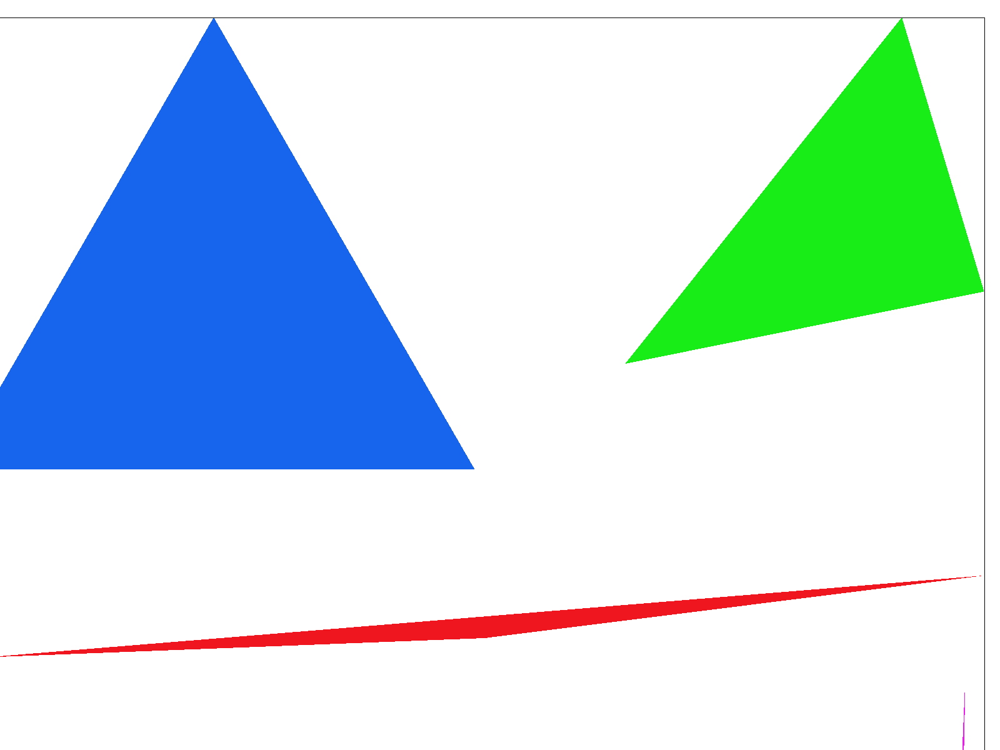
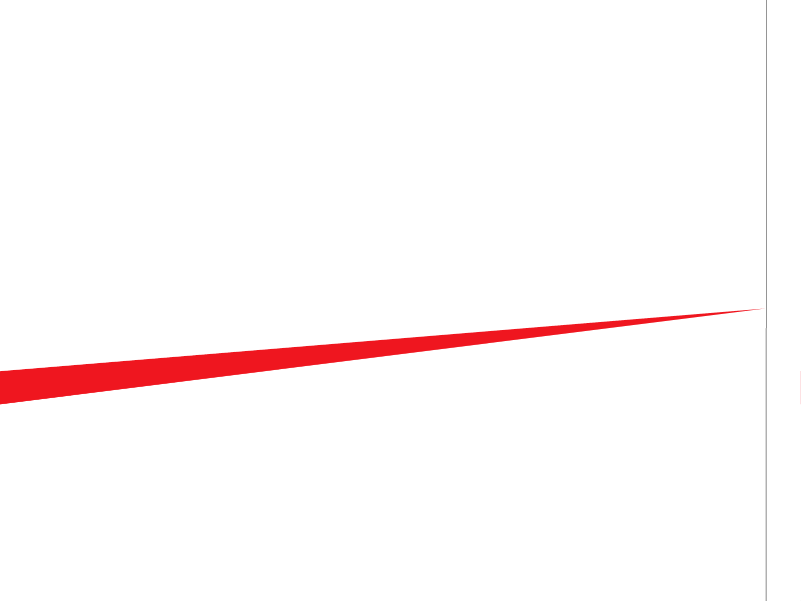
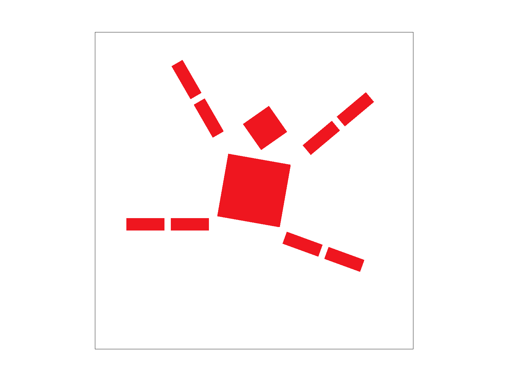

CS184/284A Spring 2025 Homework 1 Write-Up
Names: Joshua Almario, Darren Ting
Link to webpage: (TODO) cs184.eecs.berkeley.edu/sp25
Link to GitHub repository: (TODO) cs184.eecs.berkeley.edu/sp25

Overview
Give a high-level overview of what you implemented in this homework. Think about what you've built as a whole. Share your thoughts on what interesting things you've learned from completing the homework. TODO!!!!Task 1: Drawing Single-Color Triangles
Walk through how you rasterize triangles in your own words.We implemented the line test then ran through the pixels in the triangle’s bounding box for the intersection between the three line tests. The pixels in this test are in the triangle, so we fill them in.
Explain how your algorithm is no worse than one that checks each sample within the bounding box of the triangle. The bounding box of the triangle is defined as the smallest rectangle that can be drawn whilst ensuring that the entire triangle is within it.
Presently we just check the bounding box itself. It is no worse but also no better..
Show a png screenshot of basic/test4.svg with the default viewing parameters and with the pixel inspector centered on an interesting part of the scene.

Task 2: Antialiasing by Supersampling
Walk through your supersampling algorithm and data structures. Why is supersampling useful? What modifications did you make to the rasterization pipeline in the process? Explain how you used supersampling to antialias your triangles.In order to prevent hard edges in our triangles, we use supersampling. We effectively just the triangles rendered on a larger sample buffer in a similar fashion to normal rendering. We mostly changed the coordinate math to account for the larger buffer size. This goes for other various methods involving the sample buffer, too. For lines and points (not supersampled) we just fill in all the relevant pixel’s samples with a solid color. When resolving the samples, we simply average all the supersamples into a single pixel.
Show png screenshots of basic/test4.svg with the default viewing parameters and sample rates 1, 4, and 16 to compare them side-by-side. Position the pixel inspector over an area that showcases the effect dramatically; for example, a very skinny triangle corner. Explain why these results are observed.
|
|
|

|
Task 3: Transforms
Create an updated version of svg/transforms/robot.svg with cubeman doing something more interesting, like waving or running. Feel free to change his colors or proportions to suit your creativity. Save your svg file as my_robot.svg in your docs/ directory and show a png screenshot of your rendered drawing in your write-up. Explain what you were trying to do with cubeman in words.
|

|

|
We attempted to replicate the image on the right with our robot, which involved applying rotations and translations to the robot's legs and arms as well as a rotation to the whole robot asset.
Task 4: Barycentric coordinates
Explain barycentric coordinates in your own words and use an image to aid you in your explanation. One idea is to use a svg file that plots a single triangle with one red, one green, and one blue vertex, which should produce a smoothly blended color triangle.Barycentric coordinates are a coordinate system that allows for greater precision across a triangle. Coordinates of a point are determined by a proportion between the line from a point to a vertex and the line from the vertex to the line opposite from the vertex, applied to all three vertices in a triangle.
Show a png screenshot of svg/basic/test7.svg with default viewing parameters and sample rate 1. If you make any additional images with color gradients, include them.